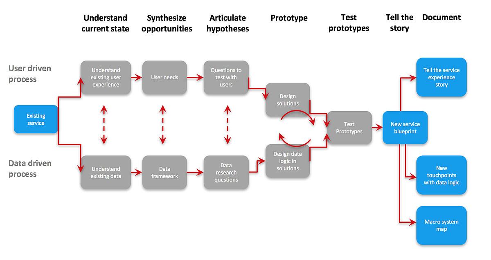
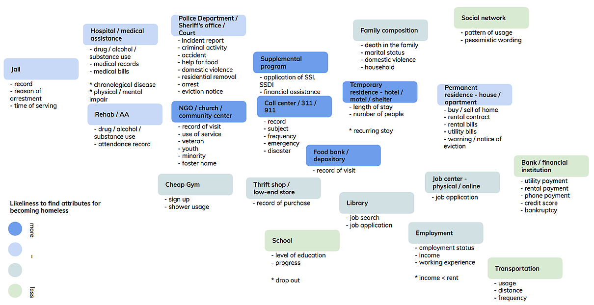
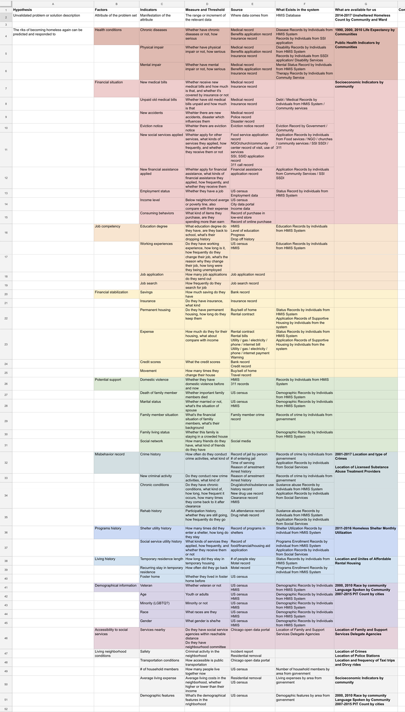

Topic source
2017 F, Data Driven Service Design, Institute of Design
Advisor
Mark Faga, Annie Conway
Teammates
Shangyanyan Li, Yachu(Charlie) Feng
Project Length
14-week Workshop
Design Brief
Homelessness is a persistent problem in Chicago. Homelessness is defined as an individual
who does not have a fixed, regular or adequate night time residence.
Chicago’s Department of Family and Support Services (DFSS) operates numerous shelters and programs
to support the homeless, as well as emergency rental assistance and other services
to prevent those at risk from becoming homeless.
Nevertheless, thousands of individuals and families every year experience financial and other emergencies
and lose their housing. So in this project,
How might we deliver smarter social services to predict and identify Chicago residents at risk of becoming homeless and target them for preventative interventions using data?
Thought Frame
In this project, we are not only looking at the user side, but also data available in the system. So we combine qualitative research and quantitative research to think about how might we deliver smarter social services to predict and identify Chicago residents at risk of becoming homeless and target them for preventative interventions. Those two types of research can inform each other and deliver better solutions which incorporate both user needs and system capabilities.

User Research
We visited multiple shelters, service providers, 311 call center and talked with both staff members and shelter guests to learn their experiences along the journey and when the data is being collected and used.
SITE VISIT AND OBSERVATION
STAKEHOLDER INTERVIEW
ARTIFACT COLLECTION
User Journey of Homeless

After analyzing the data and drawing the journey map with data input and out,
we find two opportunities to prevent people at high risk become homeless.
The first one is preventing high risk residents who have never been homeless before,
and the second one it preventing people who ended homeless status and get permanent housing
from being homeless again. Our group will focus more on the second situation.
Data Research
Data Flow in the System
When we are doing data research, we looked at what kinds of data are collected along the process and when those data is collected and applied by whom. From doing both user research an data research, we find that there are lots of stakeholders are involved in this process, and there are complex back-end data systems supporting those process. After making the stakeholder map and process map, we have a better sense of how data is flowing in the system across different stakeholders along the process
Stakeholder Map
Process Map
Service Blueprint
After learning the application process of housing services, we combined what we learned about user journey and supporting process to come up with service blueprint to understand how existing services support users. We also incorporate what we learned about data flow into the blueprint to better understand the existing data collection and application problems and potentials. Because all different agencies have their own process, we choose Mercy Housing as an example to analyze.
Relation Between Variables
To identify important factors which can help us identify high risk population and build data framework, we looked at different variables and relationship between them. We used visualization for not only coming up with hypotheses about which factors matter, but also proving or disproving hypotheses generated from previous research.
Data Framework

To identify what kinds of data we can use to predict and how to apply them to identify high-risk population, we looked at data generated at different stages and through different channels. After identify those data points, combing with information we get from primary and secondary research, we generated an initial data frame work.
Types of Data
Data Mechanism
Hypothesis & Analysis
After coming up with the assumptions about which factors may cause residents to become high risk of homeless, we begin to think about what types of data are particularly important to identify high risk residents who have already got permanent housing. We also think about indicators of each factor, how to measure them and where to get the data. After list all the possible factors, we pick up some important ones according to our previous research to develop hypotheses and design the methods to prove or disprove them. Those hypotheses will finally influence our solutions.
Data Framework
Synthesis & Solutioning
Concept Ideation
After generating the data framework and hypotheses, we selected three groups of people which can be identified through data that we want to intervene through our services. We ideate 100+ ideas about how can we provide appropriate services to those users, and we map them onto a service journey.
Solution Framework
Final Solution
Our solution is a new service for both case managers and post-homeless based on HMIS system. We will collect data from guests through multiple touch points both when they're in shelters and after they graduated. Then we will use our algorithm to calculate the risk scores in three categories to predict the possibilities of them to become homeless again. Case managers can use this information to find more appropriate services for them to improve and provide intervention when necessary.
New Service Blueprint
Data Flow in the System
Feedback
After designing the service and main touchpoints, we go back to case managers to test our concepts. Case managers think our solution in general can address their issues. But the details of each touchpoints may need further refinement. We modify our service and touchpoints according to their feedback.